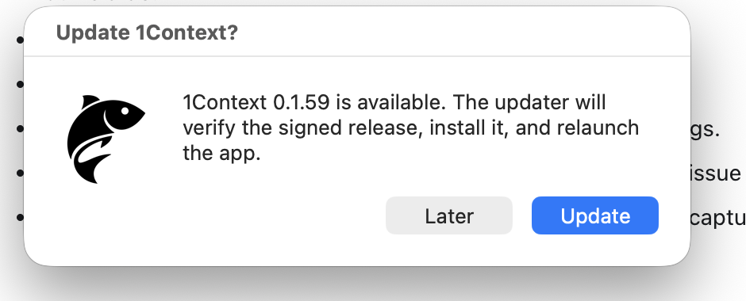

1Context Update Policy
Updates are a product surface. Every prompt, release note, failure message, and after-update message should be controlled by 1Context policy, not by Sparkle defaults or generated engineering notes.

Policy Principle
Make life simple for users. A user should not have to understand Sparkle, signatures, appcasts, critical updates, release trains, or installer failure categories. 1Context should keep itself healthy and ask for attention only when there is a simple action to take.
Users Should Experience
- Updates happen quietly when they need to happen.
- Mandatory updates can interrupt active use and relaunch immediately.
- Optional updates never interrupt active use.
- Failure copy is short and human.
- Rare success messages are controlled by Paul.
Users Should Not Experience
- Release notes shoved into the update modal.
- Raw Sparkle or installer error text.
- Technical failure categories.
- Prompts asking them to reason about updater mechanics.
- Stopped remembering after an update attempt fails.
Mandatory vs Optional
A mandatory release means continuing to run the previous version creates meaningful product risk: privacy, data integrity, setup reliability, updater continuity, or passive remembering correctness.
- May interrupt active use.
- Installs immediately when detected.
- Downloads, installs, and relaunches without asking.
- Does not show release notes before install.
- Does not pause memory just because an update attempt failed.
An optional release means the old app is still acceptable to run. These updates can improve the product, but they are not urgent enough to interrupt a passive memory system.
- Background checks stay silent.
- The menu may show a neutral update state.
- Manual check can show one small prompt.
- The user must click Update before install and relaunch.
- No release notes appear in the modal.
User-Facing Surfaces
| Surface | Default Policy | Allowed Copy |
|---|---|---|
| Mandatory update detected | Silent auto-install path. Menu also shows the update action until installed. | Menu: Update Available. Prompt, if opened by the user: A 1Context update is ready. |
| Optional update detected in background | Silent discovery. Menu shows the update action until installed. | Menu: Update Available. Prompt, if opened by the user: A 1Context update is ready. |
| Optional update shown after manual check | Small native prompt. | A 1Context update is ready. |
| Release notes | Hidden from updater UI. | Only shown behind an explicit user action, if enabled. |
| Update failed | Only after an update was found or install started and silent retries are exhausted. Keep old app usable. | Update failed. Please contact support at paul@haptica.ai. |
| Post-install success | Hidden by default. | 1Context Improved! |
| Settings submenu | Always shows the currently running app version. | Version <running app version> |
Menu Bar Policy
The menu bar is the persistent, low-friction update surface. Even when an update is not interrupting the user, the menu should make the app's state obvious.
Main Menu
- When no known update is pending, show Check for Updates.
- When an optional update is available but not installed, show a neutral update action until it is installed.
- When a mandatory update is available but not yet installed, show the same update action until the automatic update completes.
- If the user clicks the update action for either release class, show the normal concise update message and allow the update flow to continue.
- Do not use urgent or technical language in the menu unless the app truly needs support.
Settings Submenu
- Always show the currently running app version at the top of Settings.
- The version line is informational and disabled.
- The version must match the installed app bundle that is currently running.
- The version line should make support conversations easy: the user can read it without opening a terminal.
Mandatory Update Behavior
Mandatory updates are allowed to interrupt because 1Context is a passive memory system. It is hard to know when the product is actively being used, and stale memory software is more harmful than a brief relaunch.
Contract
- Check at launch and on the configured background interval.
- If the release is mandatory, install immediately when available.
- Relaunch immediately after install.
- Do not show release notes, preflight explanation, or confirmation UI.
- If an automatic check fails before any update is found or install begins, retry silently and do not show support UI.
- If update fails, keep the existing app running whenever possible.
- If an update was found or install began and then failed after retries, show only the approved support message.
Optional Update Behavior
Optional updates should respect attention. The app can discover them, but it should not make them feel urgent.
Background Discovery
- Check silently.
- Do not open a modal.
- Do not show release notes.
- Do not relaunch the app.
- Keep the menu update action visible until the update is installed.
Manual Check
- User asks for update state from the menu.
- If the app is current, a simple up-to-date message is allowed.
- If an optional update exists, show a small prompt.
- Install only if the user clicks Update.
- Use product copy, not technical updater copy.
- After installation, return the menu action to Check for Updates.
Founder-Controlled Manifest
The release workflow may execute policy, but it may not invent policy. Every release should include a committed manifest that controls release class and user-facing update messages.
version: 0.1.59
update_class: mandatory
approved_by: paul
reason: setup_reliability
minimum_autoupdate_version: 0.1.58
ui:
optional_prompt:
title: "Update 1Context?"
body: "A 1Context update is ready."
show_release_notes_in_update_window: false
failure_message:
title: "Update failed."
body: "Please contact support at paul@haptica.ai."
post_install_message:
enabled: false
title: "1Context Improved!"
body: ""
Control Panel
The eventual control panel should edit the manifest, not hidden workflow inputs. It should make the following choices obvious before any release ships.
Required Controls
- Release class: Mandatory or Optional.
- Reason for mandatory classification.
- Minimum version that should auto-update.
- Show or hide release notes in updater UI.
- Failure message title and body.
- Post-install message enabled or disabled.
Validation
- Tag, VERSION, manifest, GitHub release, and appcast must agree.
- Mandatory appcast must include critical update metadata.
- Optional appcast must not include critical update metadata.
- Release notes must not appear in updater UI unless policy allows it.
- Every user-facing string must come from the policy layer.
Approved Messages
Default post-install title. Hidden unless enabled for a release.
Please contact support at paul@haptica.ai.